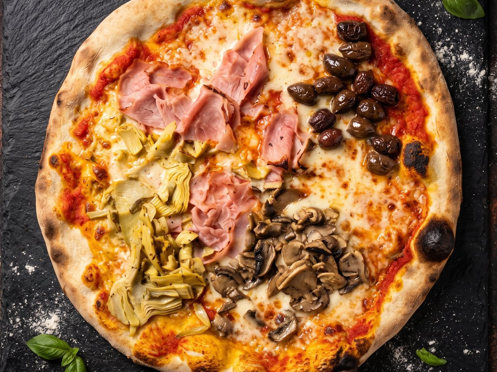

Le pizze
Le speciali della casa
- Golosaburrata, bufala, pomodori secchi, crudo, rucola13
- Liguriaburrata, pomodori secchi, rucola, olive nere12
- Pelmofunghi, prosciutto crudo, gorgonzola11
- Civettafunghi, gorgonzola, porchetta·
- Dolomitiformaggio, funghi, salsiccia10
- Mosquitomelanzane, zucchine, pomodorini, grana10
- Infernoaglio, olive bianche, peperoni, salame piccante10
- Venetoporcini, pancetta, rosmarino10
- Trevigianasolo in inverno · crudo, radicchio11
- Pizza della casabresaola, brie, grana, rucola, aglio9,5
Le classiche
- Marinarapomodoro, aglio, origano4,5
- Margheritapomodoro, mozzarella5,5
- Napoliacciughe, capperi7
- Cottoprosciutto cotto7
- Salaminosalame piccante7,5
- Capricciosafunghi, cotto, carciofini8
- Quattro formaggigorgonzola, grana, mozzarella, formaggio8,5
- Boscaiolafunghi, gorgonzola, speck9,5
- Valdostanaspeck, taleggio9
- Brie e nocibrie, noci, mozzarella8,5
- Porcinifunghi porcini8,5
- Vegetarianamelanzane, zucchine8
- Calzonecotto, funghi8
- Misto maregamberi, vongole10